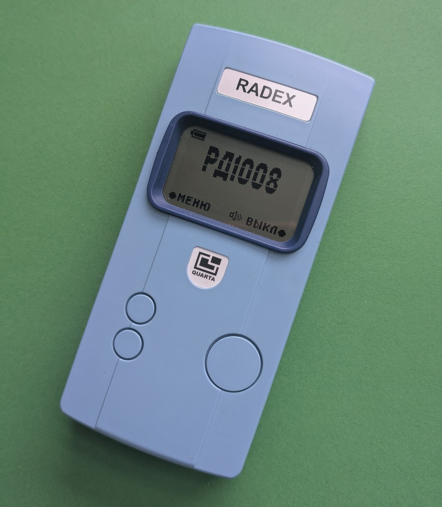

Азаматтық қорғаныс Civil Defense Гражданская оборона и защита
Радиация көзге көрінбейді — оны тек аспаппен анықтайды; уақыт, қашықтық және экранмен қорғанады. Radiation is invisible — only instruments detect it; protect yourself by time, distance and shielding. Радиацию нельзя увидеть — её выявляют только приборами; защита временем, расстоянием и экраном.

Иондаушы сәуле көзге көрінбейді, иісі мен дәмі жоқ, оны сезім мүшелерімен білу мүмкін емес — сондықтан оны тек аспаппен ғана анықтайды. Дәл осы себептен дозиметриялық бақылау міндетті. Сәуле сыртқы (дененің сырттан сәулеленуі) және ішкі (радиоактивті заттарды демалу не жұту арқылы организмге түсуі) болуы мүмкін. Үлкен дозалар сәуле ауруын тудырады, сондықтан уақытында қорғану өмірлік маңызды. Ionising radiation is invisible, has no smell or taste and cannot be sensed by the body — it can be detected only by instruments. That is exactly why dosimetric monitoring is mandatory. Exposure may be external (the body irradiated from outside) or internal (radioactive substances entering through breathing or swallowing). High doses cause radiation sickness, so timely protection is vital. Ионизирующее излучение невидимо, не имеет запаха и вкуса, не ощущается органами чувств — его обнаруживают только приборами. Именно поэтому дозиметрический контроль обязателен. Облучение бывает внешним (тело облучается снаружи) и внутренним (радиоактивные вещества попадают в организм при дыхании или с пищей). Большие дозы вызывают лучевую болезнь, поэтому своевременная защита жизненно важна.
Жинақталған доза — зиверт (Зв), миллизиверт (мЗв)Dose — sievert (Sv), millisievert (mSv)Доза — зиверт (Зв), миллизиверт (мЗв) Доза қуаты — мкЗв/сағ, Р/сағDose rate — µSv/h, R/hМощность дозы — мкЗв/ч, Р/ч
| ТүріTypeВид | СипатыNatureПрирода | Өту қабілетіPenetrating powerПроникающая способность | ҚорғанысShieldingЗащита |
|---|---|---|---|
| Альфа (α)Alpha (α)Альфа (α) | ауыр бөлшектерheavy particlesтяжёлые частицы | өте әлсіз (ауада бірнеше см)very weak (a few cm in air)очень слабая (несколько см в воздухе) | қағаз парағы немесе тері тоқтатады; ішке түссе қауіптіstopped by paper or skin; dangerous if taken insideзадерживает лист бумаги или кожа; опасна при попадании внутрь |
| Бета (β)Beta (β)Бета (β) | жылдам электрондарfast electronsбыстрые электроны | орташа (ауада бірнеше м)moderate (a few m in air)средняя (несколько м в воздухе) | киім, жұқа металл, шыны қабатыclothing, thin metal, a layer of glassодежда, тонкий металл, слой стекла |
| Гамма (γ) және нейтрондарGamma (γ) and neutronsГамма (γ) и нейтроны | электромагниттік / нейтрондықelectromagnetic / neutronэлектромагнитное / нейтронное | өте жоғары (жүздеген м)very high (hundreds of m)очень высокая (сотни м) | қалың экран қажет — қорғасын, бетон, топырақ қабатыthick shielding needed — lead, concrete, a layer of soilнужна толстая защита — свинец, бетон, слой грунта |
Жартылай әлсіреу қабаты (γ үшін): бетон ≈ 10 см, топырақ ≈ 14 см, су ≈ 23 см — әр осындай қабат дозаны шамамен екі есе азайтады. Half-value layer (for γ): concrete ≈ 10 cm, soil ≈ 14 cm, water ≈ 23 cm — each such layer roughly halves the dose. Слой половинного ослабления (для γ): бетон ≈ 10 см, грунт ≈ 14 см, вода ≈ 23 см — каждый такой слой примерно вдвое снижает дозу.
| АспапInstrumentПрибор | Нені өлшейдіWhat it measuresЧто измеряет | ҚолданылуыUseПрименение |
|---|---|---|
| Жеке дозиметр (ДКП-50, ИД-1)Individual dosimeter (DKP-50, ID-1)Индивидуальный дозиметр (ДКП-50, ИД-1) | адамның жинақталған дозасын (Зв)a person's accumulated dose (Sv)накопленную дозу человека (Зв) | әркімнің сәулелену деңгейін бақылауtracking each person's exposureконтроль облучения каждого человека |
| Рентгенометр / доза қуатын өлшегіш (ДП-5)Roentgenometer / dose-rate meter (DP-5)Рентгенометр / измеритель мощности дозы (ДП-5) | жердегі радиация деңгейін (Р/сағ)the radiation level on the terrain (R/h)уровень радиации на местности (Р/ч) | аумақты барлау, қауіпті аймақ шекарасын анықтауsurveying terrain, marking the danger-zone boundaryразведка местности, определение границ опасной зоны |
| РадиометрRadiometerРадиометр | беттер, киім, азық-түлік пен судың ластану дәрежесінcontamination of surfaces, clothing, food and waterзаражённость поверхностей, одежды, продуктов и воды | дезактивация мен бақылаудың тиімділігін тексеруchecking decontamination and screeningпроверка дезактивации и контроль |
Аспапты жұмысқа дайындау: қуат көзін тексеру, нөлге келтіру (калибрлеу), бақылау көзімен сынау, содан кейін ғана өлшеу. Preparing an instrument: check the power source, zero it (calibrate), test against the control source, and only then take readings. Подготовка прибора к работе: проверить источник питания, установить ноль (калибровка), проверить по контрольному источнику и только затем измерять.
УАҚЫТTIMEВРЕМЯ
аймақта барынша аз бол — доза сәулелену уақытына тура пропорционалspend minimum time in the zone — dose is proportional to exposure timeминимум времени в зоне — доза пропорциональна времени облучения
ҚАШЫҚТЫҚDISTANCEРАССТОЯНИЕ
көзден алыс бол — қашықтық 2 есе артса, доза қуаты ≈ 4 есе кемидіkeep away from the source — double the distance, dose rate drops ≈ 4 timesдальше от источника — вдвое дальше, мощность дозы меньше ≈ в 4 раза
ЭКРАНSHIELDЭКРАН
қабырға, топырақ, бетон, баспана, ЖҚҚ — сәуле мен дене арасында кедергіwalls, soil, concrete, shelter, PPE — a barrier between you and the sourceстены, грунт, бетон, укрытие, СИЗ — преграда между вами и источником